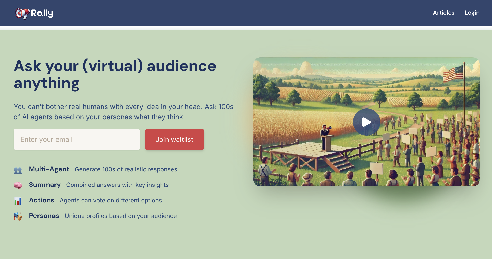

Problem hunting with language models
I'm reading the book Problem Hunting by Brian Long, who founded TapCommerce and Attentive. He has a playbook for finding the right problem for your startup to work on:
Principles of Problem Hunting
- Start with a large growing market. A rising tide lifts all boats.
- Identify buyers. For consumer-oriented businesses you can break it down to cohorts, and for business-to-business sales you need to find employees with decision-making authority.
- Create a list and schedule meetings with buyers. Use a variety of digital tools to engage your buyers.
- Get qualitative and quantitative feedback from interviews. Listen closely to your buyer, and press to find their biggest problems.
- Create and refine a problem definition document (PDD). Define the critical problems of your buyer. We will use this later to build and test your solutions.
- Make sure you like the problem. You will be more likely to succeed and enjoy your work if you pick an industry you are interested in.
The book came out in 2023 so was written before the current LLM boom. There are several tools available now that make this process easier, faster, and cheaper.
1. Deep Research. Ben Dickson wrote about how he uses deep research to validate startup ideas:
I have run several experiments to see how to make the best out of Deep Research for product and market research. Here is the formula that works best for me:
1- I start with a problem statement. I run it by a large language model (LLM) such as ChatGPT or Gemini to turn it into a "jobs to be done" statement.
2- I give the JBTD statement to Deep Research and ask it to research the current solutions for the problem and the potential pain points that have not been addressed by current solutions.
It usually returns a very detailed answer that contains the kind of information that would take me hours to gather.
I usually iterate on the answer one more time with a reasoning model (e.g., o3-mini-high) to create a final table that compares the existing solutions....
And then I gave the JBTD statement to OpenAI Deep Research with the following instructions:
1- What solutions currently exist for this problem
2- What are some of the potential pain points for PMs that a new product can address
Interestingly, before doing its research, it asked me four clarifying questions, which I found to be very relevant. After answering them, it worked for 11 minutes and came back with a very detailed report of different no-code LLM tools for startups and enterprise applications.
2. Rally. This is a new product from the Every team that allows you to simulate an audience and ask it questions:
It's still in beta, but this would be a way to follow Long's steps 2-5 above more or less instantly.